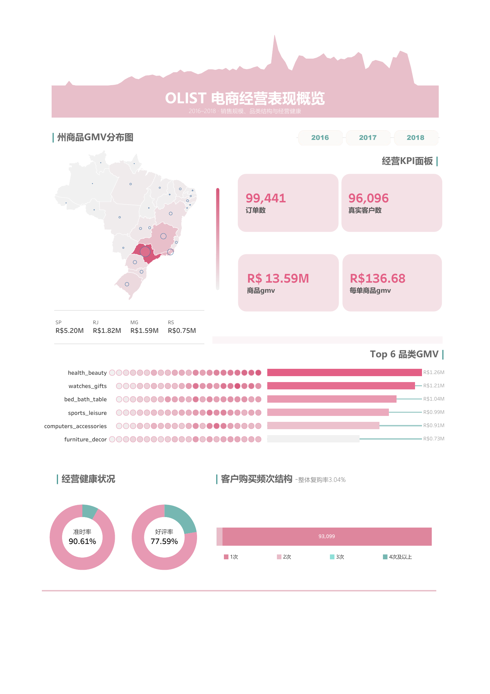

01 / CONTEXT
先确认问题规模
延误不是孤立个案。先从订单覆盖、履约漏斗和评价完整度建立分析边界，再进入客户体验判断。
履约过程
订单履约阶段保留率
创建至送达保留 97.0%；批准后损失 2,805 单，其中批准→发货损失最大（1,623 单）。
02 / EVIDENCE
延误与差评存在强关联
不只比较平均评分，更直接观察差评率，并用统计模型检验品类、州和订单金额能否解释这种差异。
体验对比
未延误 vs 延误
03 / THRESHOLD
客户容忍度在第 3 天出现拐点
延误不足一天的影响有限；从 1–2 天进入 3–5 天后，差评率由 25.52% 跃升至 56.66%。
候选预警阈值
3 天
在风险陡增前主动沟通，而不是等差评发生后再补救。
不足 3 天
自动更新物流状态与预计到货时间。
达到 3 天
主动致歉并进入小额补偿候选队列。
超过 6 天
升级人工优先处理，跟踪客户反馈。
04 / PRIORITY
治理资源应该先投向哪里？
销售规模大不等于治理价值高。综合 GMV、延误订单量和差评率上升，优先识别高影响品类。
横轴：商品 GMV纵轴：预计额外差评风险气泡：延误订单量
05 / BUSINESS VIEW
同一个项目，两种分析视角
HTML 解释履约风险与客户体验；Tableau 承担经营概览，展示订单规模、区域、品类与客户结构。

TABLEAU经营表现
回答规模、区域、品类和客户结构。
→
INTERACTIVE STORY问题诊断
回答延误何时影响体验，以及如何治理。
06 / METHOD
分析可信度来自清晰口径
订单、商品、支付与评价存在一对多关系。项目先按订单聚合，再分别建立订单级、订单×品类级分析层，避免 JOIN 放大订单数和 GMV。
实际送达时间严格晚于承诺送达时间。
评价分数小于或等于 2；无评价订单不进入分母。
两比例 Z 检验、95% 置信区间与二项 GLM。
呈现强关联，不把观察性结果写成因果效应。